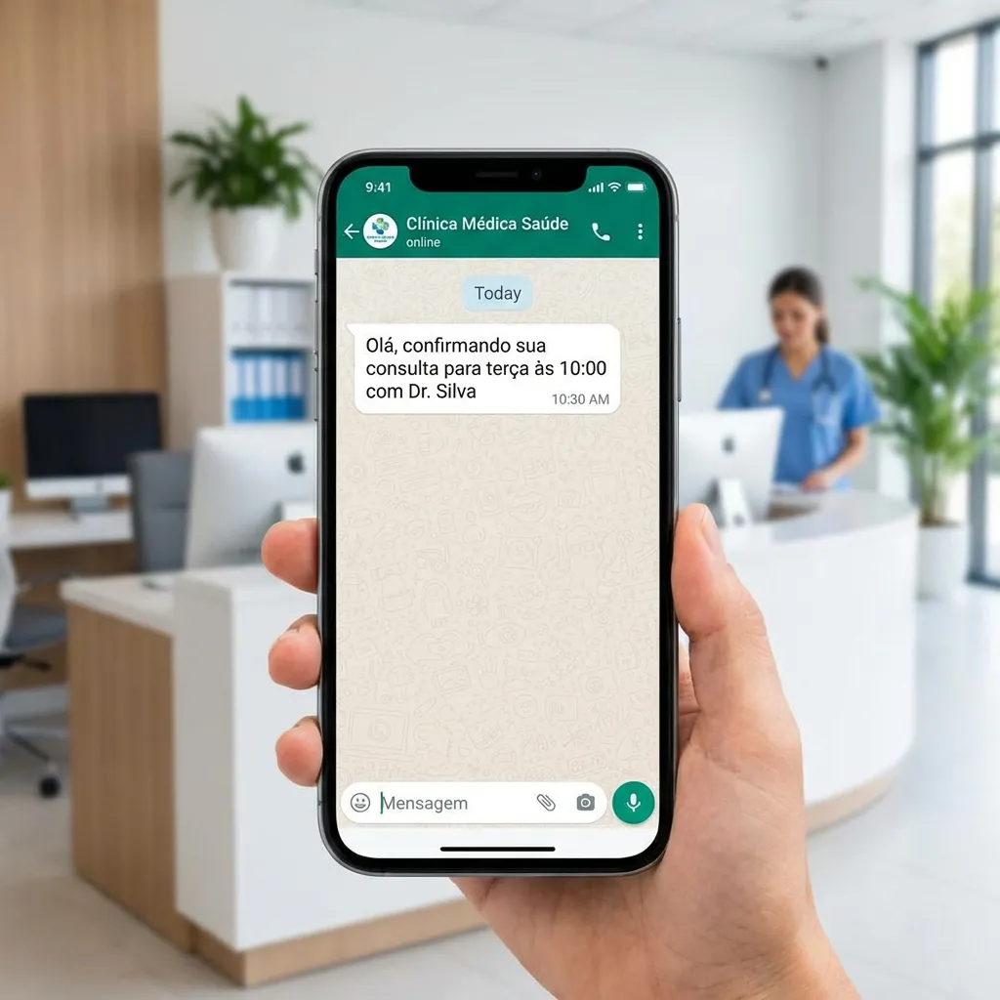

Gerir uma clínica ou consultório em São Paulo é um desafio diário. Além de oferecer excelência clínica, profissionais da saúde precisam lidar com a rotina acelerada e o trânsito imprevisível da metrópole.
Esses fatores externos contribuem diretamente para um dos maiores gargalos na gestão de saúde local: as faltas de pacientes, também conhecidas no mercado como "no-shows".
Quando um paciente não comparece e não avisa com antecedência, o horário da agenda fica ocioso, impedindo que outro paciente seja atendido e gerando grande frustração para a equipe.
Prejuízo silencioso: Estudos do Sebrae e entidades de gestão em saúde indicam que o absenteísmo em clínicas no Brasil chega a alarmantes 30%, comprometendo severamente o faturamento mensal.
Por que os Pacientes Faltam?
O Desafio da Comunicação Rápida
Na capital paulista, imprevistos são a regra. Um atraso no transporte, uma reunião que se estende ou o simples esquecimento são justificativas comuns para a ausência nas consultas.
Muitas faltas poderiam ser evitadas se o paciente conseguisse cancelar ou reagendar a sua visita médica de forma rápida e totalmente sem burocracia.
Porém, o paciente frequentemente tenta avisar a clínica e encontra linhas ocupadas ou sofre com a demora no retorno via WhatsApp pela equipe de recepção sobrecarregada.
É neste exato cenário que a automação através de assistentes de inteligência artificial desponta como a solução definitiva para otimizar o atendimento.
Benefícios da IA no WhatsApp para Clínicas
Com quase 147 milhões de brasileiros utilizando o WhatsApp diariamente, levar o seu atendimento automatizado para este canal é uma decisão estratégica vital para qualquer gestor.
Ao contar com uma plataforma de secretária virtual com IA, como a Aplia Saúde, consultórios médicos, odontológicos e de psicologia ganham vantagens competitivas de alto impacto:
- Confirmação proativa: A IA envia lembretes automáticos e interage de forma natural com o paciente para confirmar, cancelar ou reagendar, atualizando a agenda em tempo real.
- Disponibilidade 24/7: Seu paciente em São Paulo pode solicitar agendamentos de madrugada ou aos finais de semana, horários em que a clínica física está fechada.
- Triagem inteligente: A secretária virtual identifica as necessidades e dúvidas frequentes do paciente, desafogando a equipe humana para focar no acolhimento presencial.
Segurança de Dados e Ética: Soluções de IA avançadas garantem conformidade com a LGPD e seguem diretrizes regulatórias como as normativas de comunicação do CFM e do CRO, protegendo o sigilo dos dados.
Implementando a Automação na Prática
Modernizar a gestão da sua agenda e implementar o atendimento automatizado via WhatsApp com a Aplia Saúde é um processo estruturado e incrivelmente rápido.
1 Mapeamento do Fluxo de Atendimento
Identifique os serviços mais procurados na sua clínica de São Paulo, os horários de pico e as principais dúvidas operacionais que hoje sobrecarregam sua recepção.
2 Integração com a Aplia Saúde
Conecte o número de WhatsApp comercial do consultório à plataforma de inteligência artificial de forma segura, sincronizando-a com o seu software de agenda médica atual.
3 Personalização do Assistente Virtual
Configure a linguagem e o tom de voz da IA para refletir a identidade e o profissionalismo da sua clínica, garantindo um atendimento humano, empático e resolutivo.
Transforme o seu Consultório Hoje Mesmo
Reduzir as faltas de pacientes e otimizar o tempo valioso da sua equipe não é mais um diferencial futurista, mas uma necessidade imediata de sobrevivência e crescimento sustentável.
Com a automação inteligente da Aplia Saúde, você preenche lacunas na sua agenda, eleva a satisfação do paciente ao máximo e garante uma gestão financeira muito mais previsível.
Referências e Fontes
- Conselho Federal de Medicina (CFM): Resoluções vigentes sobre publicidade, comunicação e telemedicina médica no Brasil (incluindo Resolução CFM nº 2.336/2023).
- Sebrae: Pesquisas setoriais sobre gestão de pequenos e médios negócios de saúde, focadas no impacto financeiro do absenteísmo de pacientes.
- Lei Geral de Proteção de Dados (LGPD): Diretrizes governamentais oficiais para o tratamento de dados pessoais sensíveis e segurança no setor da saúde.
Quer parar de perder pacientes?
A Aplia é uma assistente de IA que atende seus pacientes 24/7 pelo WhatsApp, agenda consultas automaticamente e envia lembretes.
Conhecer a Aplia